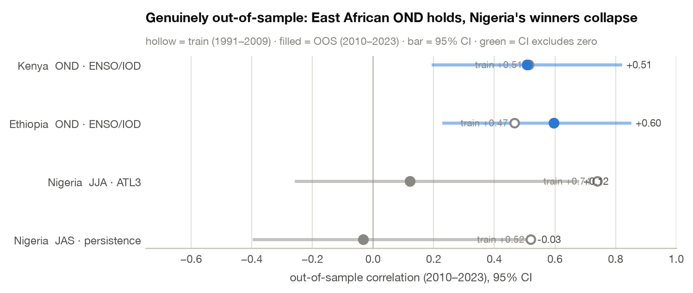
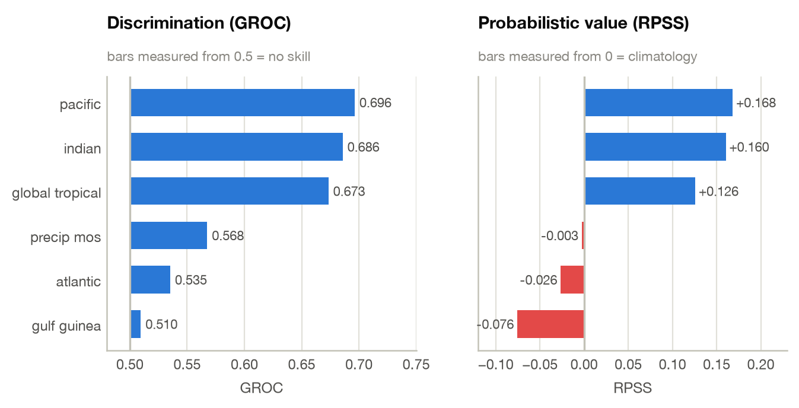
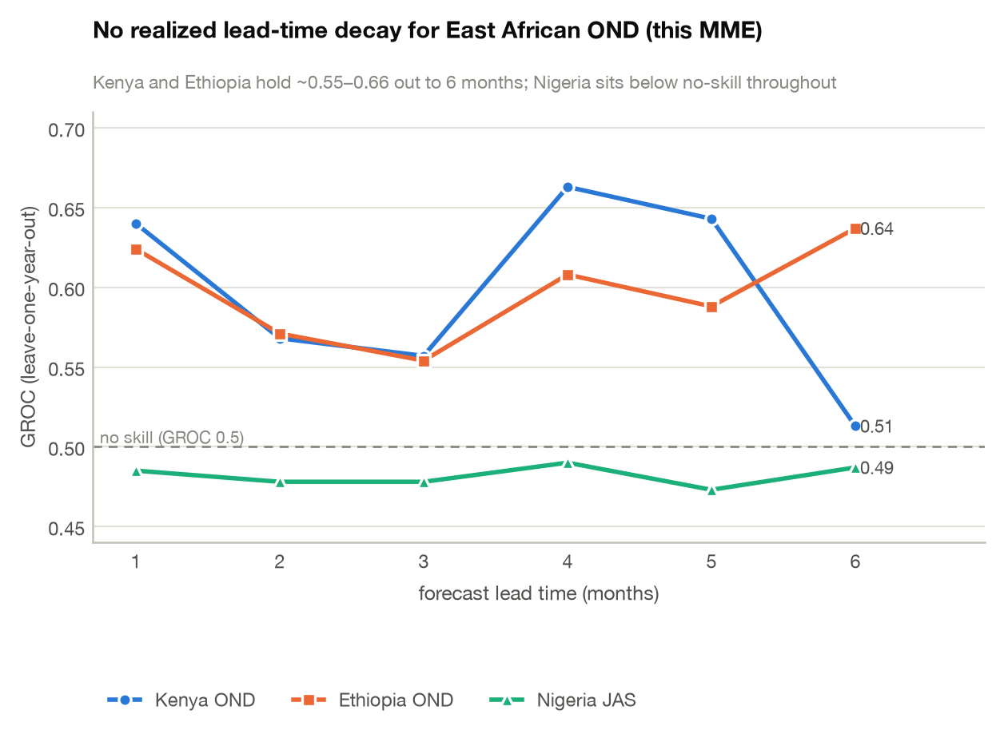
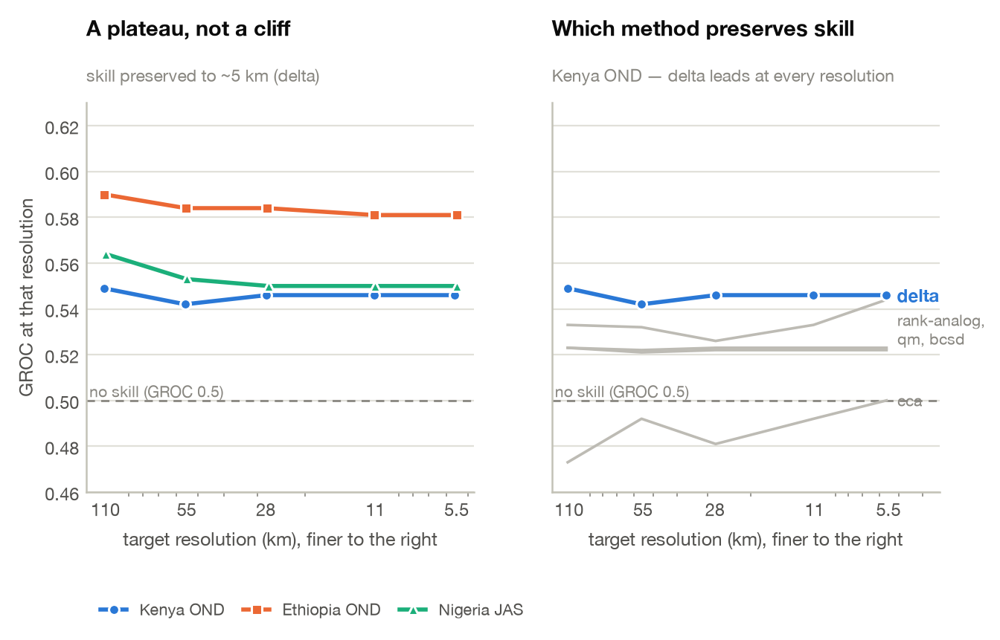

Seasonal forecast design as a search problem
A modular data-and-downscaling stack, re-pointed by one config entry — demonstrated over Nigeria, Ethiopia & Kenya
Building a seasonal forecast normally means a bespoke study per region: pick a season, pick a predictor, pick a domain, pick a method, defend each choice. Rosetta (data access) and DeepScale (calibration, ensembling, verification) collapse each of those choices into a parameter — which turns forecast design into something you can search, cross-validate, and subject to multiplicity control.
Abstract (AGU draft)
Seasonal precipitation forecasts embed dozens of design choices — target season, predictor domain,
raw SST fields versus teleconnection indices, calibration method, model ensemble, downscaling
technique, resolution, and lead time — usually fixed by convention and rarely re-optimized per
region and season. We recast forecast design as a searchable space, enabled by two modular,
xarray-native libraries: Rosetta, a federated data layer exposing NMME, C3S, CHIRPS, ERA5, and
ERSST through one normalized fetch() interface, and DeepScale, a method-agnostic layer for
calibration (CCA), multi-model combination, downscaling, and cross-validated verification. A shared
contract lets one driver build, run, and identically score any configuration under
leave-one-year-out CV — the precondition for automated, agent-driven search.
We demonstrate over Nigeria, Ethiopia, and Kenya, each re-pointed by one config entry. From observations the framework discovers each country's seasons, searches — rather than assumes — candidate predictors per season and subregion, and composites the drought-versus-flood ocean state; a config-driven harness then runs real NMME/C3S forecasts. Critically, we subject the discovered skill to multiplicity control — permutation FDR over all observed predictors, including data-driven ones — and a genuine out-of-sample block. The East African October–December short rains carry real IOD/ENSO-driven skill: an observed teleconnection that survives FDR and holds out of sample, realized by a live NMME forecast near generalized ROC 0.70 with positive RPSS. No West-African predictor survives FDR, textbook or data-driven; the East African March–May long rains stay persistently low-skill. Realized skill shows no systematic lead decay to six months, though a long-lead claim is tempered by the Indian Ocean's summer predictability barrier; downscaling holds skill to ~5 km.
We present this as an automatically computed, per-region diagnostic of where SST-based seasonal skill exists and why, with verification (FDR, out-of-sample) as the deliverable that separates real signal from best-of-search noise. A modular, uniformly scored search over a purpose-built, config-portable stack is a template for agentic autoscience toward regionally optimal, high-resolution climate services.
1 · The whole stack, in five calls
Every analysis in this report is assembled from the same handful of primitives.
Fetch any product through one signature
rosetta.fetch normalises ~40 products — NMME, C3S, CHIRPS, ERSST, CMAP — behind a single call.
Regridding, calendar alignment, seasonal aggregation and on-disk memoisation happen underneath.
import rosetta
# A 24-year NMME precip hindcast for the OND season, initialised in September,
# subset to Kenya, indexed by year — one call, ~40 products share this signature.
gcm = rosetta.fetch(
product="nmme/geoss2s",
variable="precip",
init="2016-09", # initialisation month -> defines the lead
target="OND", # 3-month target season
region=[-5, 5, 34, 42], # [lat_s, lat_n, lon_w, lon_e]
hindcast=(1993, 2016),
year_index=True,
)
Run a real multi-model ensemble with cross-validated skill
deepscale.seasonal_mme takes predictor tracks, fits CCA-MOS per model, pools the members, and
returns a verified skill report — leave-one-year-out by default.
import deepscale
tracks = {"PRCP": {name: (hcst, fcst) for name, (hcst, fcst) in models.items()}}
result = deepscale.seasonal_mme(
tracks, obs,
method="cca", # CPT-compatible canonical correlation analysis
cv="loyo", # leave-one-year-out cross-validation
forecast_year=2016,
)
result.skill_report.scores # {'generalized_roc': 0.696, 'rpss': 0.168, ...}
result.tercile_cv # (year, tercile, lat, lon) cross-validated probabilities
Search the method axis instead of guessing it
best = deepscale.optimize(
gcm, obs,
methods=["delta", "bcsd", "qm", "cca", "rank-analog"],
primary_metric="generalized_roc",
)
best.method, best.score # ('delta', 0.549)
Re-point the entire study at a new country with one entry
The portability claim, made concrete — a third country is a dict entry, not a rewrite:
# src/areas.py
AREAS = {
"kenya": dict(bbox=[-5, 5, 34, 42], chirps="kenya_chirps_monthly.nc",
bands={"National": (-5, 5), "North": (2, 5), "South": (-5, -1)}),
}
AREA = os.environ.get("AREA", "nigeria")
AREA=kenya python src/mme_search.py # same pipeline, new region
2 · What the search found
Multiplicity control — which discovered signals survive?
Searching many axes at once inflates the best score. Every observed-predictor cell — the 8
textbook indices and the discovered predictors (the data-driven sst_projection pattern, the
combo_top2 selector, rainfall persistence) — goes through a permutation test (5 000
shuffles, with the in-fold pattern/selection refit inside each shuffle so the null carries the
search's own optimism) and a single Benjamini–Hochberg FDR family per country. (The design axes
— SST domain, method, lead, resolution, model set — are a separate GROC-based search, reported below
with their sampling-noise floors, not folded into this FDR.)
| Country | cells tested | survive q < 0.05 | independent signals | strongest survivor |
|---|---|---|---|---|
| Nigeria | 144 | 0 | 0 | — |
| Ethiopia | 208 | 10 | ~3 | OND South · IOD (r = +0.56, q = 0.017) |
| Kenya | 160 | 27 | ~3 | OND · IOD (r = +0.55, q ≈ 0.005) |
Two details make this test honest: the permutation null for a leave-one-out correlation is biased negative (a zero-signal predictor scores ≈ −0.36, not 0), so the test is one-sided against that null; and near-zero-rainfall dry-season cells are excluded because they manufacture spurious correlations.
But the survivor counts overstate the number of discoveries. The National band is the
area-mean of its sub-bands, wvg2/wvg3 are deterministic functions of Niño3.4, and Niño3.4/IOD
co-vary in OND — so the East-African short-rains signal is ~1 physical hypothesis counted a dozen
ways. De-duplicated to physically distinct cells, Kenya's 27 and Ethiopia's 10 collapse to ~3
independent signals each (all the SON/OND ENSO-IOD short-rains teleconnection). The flagship q is
robust to this de-duplication — removing pseudo-replicates changes the count, not the flagship's
significance (Kenya OND·IOD sits at q ≈ 0.005, and the signal strengthens, not weakens, under
in-fold detrending). East African OND survives as exactly the physically expected IOD/ENSO block —
the signature of a real signal rather than a lucky cell.
IOD vs ENSO is not a clean statistical split. The OND "winner" alternates between the IOD and the ENSO indices on correlation gaps within sampling noise (indeed the blind training-block search above picked an ENSO-family index, not the IOD, for the same cells), and the wet-OND analog years (1997, 2019, 2023) are exactly when strong +IOD and El Niño co-occur. At n ≈ 24–33 the IOD-specific, ENSO-forced-via-IOD, and shared variance are not cleanly separable. We keep the IOD-primary framing the literature favors — but as a physically-motivated attribution, not a demonstrated statistical separation of one index over the other.
Because the family now includes the discovered predictors, the West-African null is a real test,
not an untested gap: Nigeria's best data-driven predictor (sst_projection, r = +0.46) also
fails FDR — 0 survivors — so "no West-African signal survives" is now demonstrated rather than
asserted for a cell that was never entered. Meanwhile the East-African OND cells survive under the
adaptive predictors too (Ethiopia OND · sst_projection q = 0.025; Kenya OND · combo_top2
q < 0.02): the same short-rains signal, recovered three independent ways.
Out-of-sample confirmation — the search re-run on a training block
A stricter test than the earlier one (which scored pre-picked full-record winners): the entire search is re-run on 1991–2009 only, with a train-only SST climatology so nothing from the test block leaks into standardization, and the train-discovered winner of each cell is then scored out-of-sample on 2010–2023, with a 95% bootstrap CI over the 14 test years:
| Country | Train-discovered winner | train r | OOS r | 95% CI (OOS) |
|---|---|---|---|---|
| Kenya | OND · ENSO/IOD | +0.58 | +0.50 | [+0.17, +0.82] |
| Ethiopia | OND · ENSO/IOD | +0.47 | +0.60 | [+0.23, +0.85] |
| Nigeria | JJA · ATL3 | +0.74 | +0.12 | [−0.25, +0.67] |
| Nigeria | JAS · persistence | +0.52 | −0.03 | [−0.39, +0.52] |

The East-African OND signal is what the blind search re-discovers on the training block and confirms out of sample — its CI excludes zero. Nigeria's headline train winners (ATL3 at r = 0.74!) collapse out of sample with CIs spanning zero — the textbook winner's curse, caught by the procedure-level test. And the apparent in-sample→OOS increase for East Africa is not evidence of strengthening: at n = 14 each OOS CI is ±0.3 wide and overlaps the in-sample value. The honest claim is that the discovered East-African OND signal remains positive out of sample, not that it "comes back stronger."
Real dynamical skill, by SST domain
Kenya OND National short rains, 4-model NMME (GEOSS2S + CESM1 + CCSM4 + CANSIPSIC4), CCA-MOS, LOYO:
| SST domain | GROC | RPSS | corr |
|---|---|---|---|
| Pacific | 0.696 | +0.168 | +0.455 |
| Indian | 0.686 | +0.160 | +0.481 |
| Global tropical | 0.673 | +0.126 | +0.417 |
| Atlantic | 0.535 | −0.026 | +0.032 |
| precip-MOS baseline | 0.568 | −0.003 | +0.268 |

Positive RPSS means this is usable probabilistic skill, not merely discrimination. But the
domain ranking is a weak preference, not a demonstrated separation: at n ≈ 24, GROC differences
below ~0.1 are within sampling noise (docs/14 §3). So the Pacific-vs-baseline gap (0.696 vs 0.568,
≈0.13) only marginally clears that floor, and the Pacific-vs-Indian gap (0.696 vs 0.686) is noise —
the two ocean domains are statistically indistinguishable here. The defensible statement, matching
the internal caveat that "SST-CCA barely beats the precip-MOS baseline," is that an SST predictor is
competitive with, and probably modestly above, the precip baseline for Kenya OND — not that it
wins by a clear margin. This GROC is also a dynamical-forecast score; it is not the quantity the
observed-screen FDR test below certifies (see §2).
Caveat — pending data availability. Bootstrap 95% confidence intervals on these GROC/RPSS values (a year-block resample;
src/mme_ci.py) are not yet attached: the NMME source server (CCSR/Columbia OPeNDAP) was unavailable at revision time and the hindcasts are not locally cached. The margin statements above rest on §3's ~0.1 sampling-noise floor in the interim; the CIs will be added when the data source is reachable.
3 · Skill vs. lead time — and a result that isn't textbook
GROC by lead time (months), real NMME MME:
| Region | 1 | 2 | 3 | 4 | 5 | 6 |
|---|---|---|---|---|---|---|
| Kenya OND | 0.640 | 0.568 | 0.557 | 0.663 | 0.643 | 0.513 |
| Ethiopia OND (south) | 0.624 | 0.571 | 0.554 | 0.608 | 0.588 | 0.637 |
| Nigeria JAS (Middle Belt) | 0.485 | 0.478 | 0.478 | 0.490 | 0.473 | 0.487 |

East African OND skill shows no systematic decay with lead here. There is no monotone decline from 1 to 6 months — the MME's realized GROC scatters in a band (~0.51–0.66) with no trend. That is physically coherent: the short rains are driven by the IOD/ENSO state, which is slowly varying and partly predictable seasons ahead.
A specialist caveat, though: the Indian Ocean has a well-documented boreal-summer IOD predictability barrier, so a June-initialized OND-IOD forecast is materially harder than a September one. The flat GROC-vs-lead curve above is what the ensemble realized on n ≈ 24 years (itself noisy); the stronger mechanistic reading — "a June forecast ≈ September" — leans on the observed IOD's high concurrent/mature-season persistence and would need the IOD forecast skill decomposed by initialization month (Jun/Jul/Aug/Sep → OND, detrended) to be asserted. Read the lead result as "no realized decay in this MME," not as long-lead driver predictability established.
Nigeria is a clean null at every lead (0.473–0.490, below the 0.5 no-skill line, RPSS negative throughout) — corroborating the FDR result by a completely independent route.
How much to trust the wiggles: not much, individually. Kenya and Ethiopia track each other to within ~0.02 at leads 1–3, but disagree at lead 6 (0.513 vs 0.637) — precisely where a single fold has least support at n ≈ 24. Read the band, not the points.
4 · How fine can we downscale before skill breaks?
Target grids from 1.0° to 0.05° (≈ 110 km → 5 km), skill re-verified against CHIRPS at each
resolution. Best-preserving method (delta) shown:
| Region | 111 km | 56 km | 28 km | 11 km | 5–6 km |
|---|---|---|---|---|---|
| Kenya OND | 0.549 | 0.542 | 0.546 | 0.546 | 0.546 |
| Ethiopia OND (south) | 0.590 | 0.584 | 0.584 | 0.581 | 0.581 |
| Nigeria JAS (Middle Belt) | 0.564 | 0.553 | 0.550 | 0.550 | 0.550 |

delta leads at every resolution, while cca (the MME's own MOS method)
is the weakest downscaler here, hugging the no-skill line.The frontier is a plateau, not a cliff. Within this range, resolution is not the limiting factor —
coarse-scale predictability is. You can downscale to ~5 km without losing the skill you have, but you
do not gain any either. delta (simple climatological scaling) preserves skill best, beating CCA,
BCSD and quantile-mapping.
Read this panel as a scale-sensitivity diagnostic only. Nigeria was included as an intended null control and did not behave like one here (≈0.55, like Kenya), while the lead-time MME and the FDR test both call it null. The panels measure different things: this one asks whether a downscaling method degrades a signal as the grid refines, not whether the signal carries information. Where they conflict, the multiplicity-controlled results are the arbiter.
5 · Two bugs the verification caught
A pipeline that reports skill is only as trustworthy as its failure modes. Two were found and fixed while producing these numbers — both silent, both skill-distorting.
Bug 1 — a failed transfer that returned zeros instead of raising
Large OPeNDAP hindcast requests were failing mid-stream, and the DAP client substituted zeros
rather than erroring. A zero-variance predictor makes CCA's covariance singular:
# The tell: a predictor that is silently, entirely zero
gcm.var("year").sum() # -> 0.0 (should be ~5e5)
Fixed by issuing small per-year requests, plus a validity gate at the call site:
# src/safe_fetch.py — reject a corrupt response before it poisons the cache
if finite.any() and np.nanmax(np.abs(vals[finite])) > 0.0 and np.nanstd(vals[finite]) > 0.0:
return da # good data
_purge_zero_raw(product, region) # corrupt: purge the memoised entry and retry
Bug 2 — degenerate modes that collapsed every probability
Once the data was clean, CCA still returned GROC of exactly 0.500. The cause: EOF projections were divided by singular values with no guard against near-zero (rank-deficient) modes, producing leverages of ~10⁹¹ — where statistical leverage is mathematically bounded in [0, 1].
Because the ensemble averages leverages across models, one bad model inflated the predictive variance without bound and collapsed every tercile forecast to a constant:
tercile_cv.mean(["lat", "lon"]).isel(year=0) # [0.5, 0.0, 0.5] in every single year
tercile_cv.std("year").mean() # 0.00000 <- a constant forecast cannot discriminate
The fix applies the standard pinv rcond policy — drop modes that carry no real variance:
def _project_by_sv(num, sv):
"""Divide EOF projections by singular values, dropping degenerate modes."""
smax = float(np.max(np.abs(sv)))
keep = np.abs(sv) > smax * 1e-10
out = np.zeros(num.shape)
out[keep] = num[keep] / sv[keep]
return out
Validation. Two independent aggregation paths that previously disagreed by 0.15 now converge:
| before | after | |
|---|---|---|
| pooled aggregation | 0.500 | 0.640 |
| per-model aggregation | 0.642 | 0.642 |
| RPSS (pooled) | −0.125 | +0.065 |
Agreement to 0.002 between two independent routes — plus 765 passing tests — is stronger evidence than either path alone. This bug was suppressing RPSS, so the corrected East African OND result is materially stronger than previously reported.
6 · What this demonstrates
- Forecast design can be treated as a search. One modular stack, re-pointed by a config entry, discovered each country's seasons, ranked predictors, searched SST domains and methods, swept lead times, and mapped the resolution frontier.
- The defensible result: an observed East African OND short-rains teleconnection that survives permutation-FDR (as ~3 independent signals, not 27 pseudo-replicated cells) and holds out of sample under a genuine train/test split, realized by a real NMME forecast at GROC ≈ 0.70; no West-African predictor survives FDR (textbook or data-driven); low predictability for the MAM long rains. Lead-time and SST-domain rankings are reported with their sampling-noise floors, not over-read.
- Verification is the product. Permutation-FDR (over a family that now includes the adaptive predictors), a de-duplicated survivor count, a trend-robust q, and a genuine out-of-sample block separate a discovered signal from a lucky cell — and the pipeline caught two silent, skill-distorting bugs.